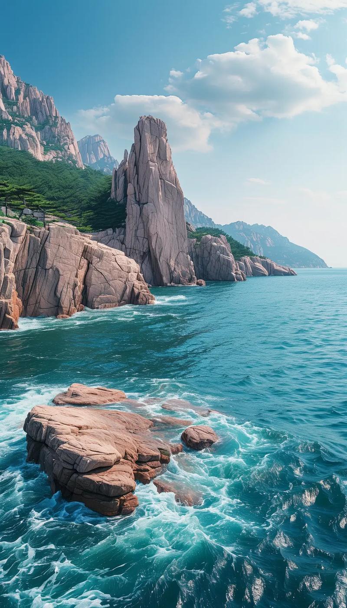
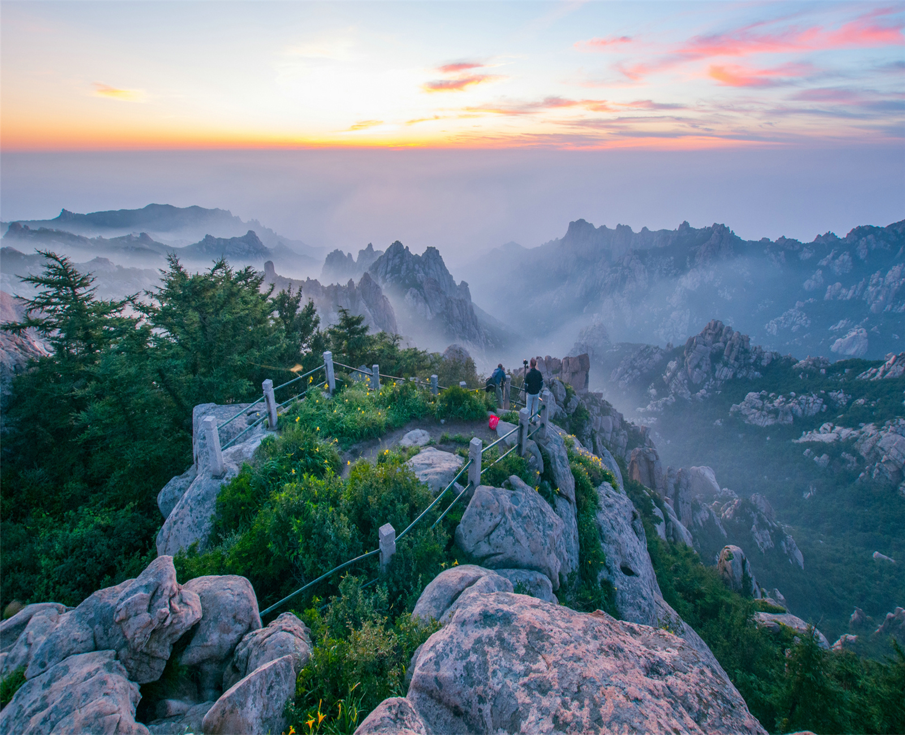
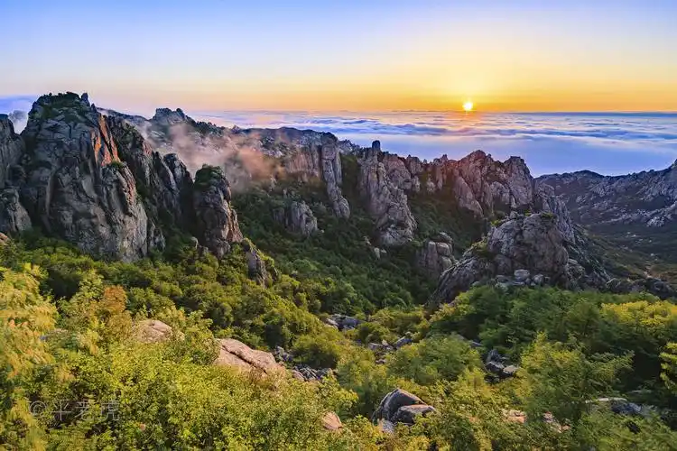

Introduction
千年道教圣地的山海奇观
崂山，位于青岛东部黄海之滨，主峰巨峰海拔1132.7米，是中国大陆海岸线上的最高峰，素有「海上第一名山」之称。崂山山海相连、云海翻涌，独特的山海景观在中华名山中独树一帜。
崂山是道教的重要发祥地之一，素有「道教全真天下第二丛林」之誉。早在春秋战国时期就有方士在此修炼，秦皇汉武也曾慕名前来寻仙求药。太清宫、上清宫、太平宫等道教宫观至今香火鼎盛，千年银杏、古柏参天，诉说着道教文化的源远流长。全真教创始人王重阳及其弟子丘处机都曾在崂山传道修行，《聊斋志异》中崂山道士的故事更是家喻户晓。
崂山矿泉水与崂山茶亦是这里的名片。崂山泉水清冽甘甜，是中国著名的矿泉水品牌；崂山茶因生长在云雾缭绕的海拔地带，吸收了山海之灵气，以「豌豆香」著称，是中国北方最负盛名的绿茶之一。
Visitor Info
Gallery
山海崂山



Routes
经典游览路线
崂山主峰，海拔1132.7米。乘索道至半山腰后徒步约1小时可登顶。山顶「先天桥」横跨两峰之间，云海翻腾时如入仙境。天气晴朗时可远眺大海，山海一色、壮阔无比。建议体力好的游客选择此路线，全程约4-5小时。
崂山历史最悠久的道教宫观，始建于西汉，距今已两千余年。太清宫三面环山、一面临海，风水极佳。宫内千年古树众多，最著名的是一棵西汉「龙头榆」和明代「银杏王」。此路线轻松，适合全年龄段，全程约2-3小时。
集山、海、洞、寺于一体。可以同时欣赏到碧海蓝天与奇峰怪石，还可参观始建于唐代的华严寺。仰口海滩沙质优良，是登山之余戏水休憩的好去处。缆车可直达山顶「天苑」观景平台，全程约3-4小时。
以溪谷瀑布闻名，九个水潭依次排列，山水相映成趣。夏季水量充沛时尤为壮观。沿途绿树成荫、溪水潺潺，是避暑消夏的绝佳选择。路线平缓，适合家庭出游，全程约2-3小时。
Tips
游玩建议
游览途中不妨在道观茶馆小憩，品尝一杯正宗的崂山绿茶，配以崂山山泉水冲泡，回甘悠长。山下有崂山矿泉水博物馆，可以了解百年品牌的故事。
从市区可乘地铁11号线至浦里站，再换乘景区旅游专线巴士。或在大河东游客服务中心乘坐景区观光车进入各游览区。自驾游客请注意旺季停车位紧张。
巨峰顶的日出与云海最为壮观，需凌晨出发。太清宫前的海天一色是经典机位。仰口「天苑」观景台可拍出山海全景大片。
崂山面积广阔，各游览区之间距离较远，建议每次选择1-2个区域深度游览。山区天气多变，即使夏季也建议携带外套。穿舒适登山鞋，带足饮用水。